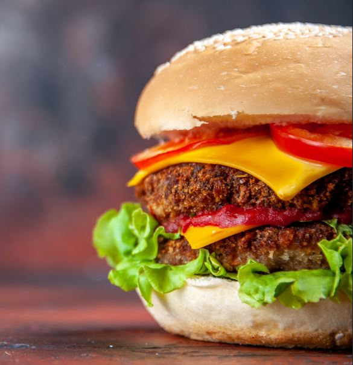
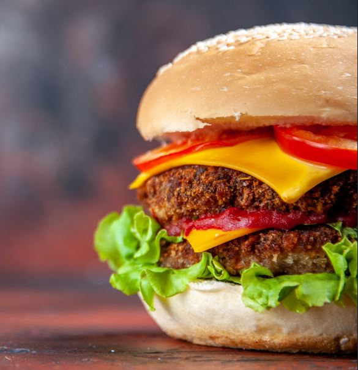
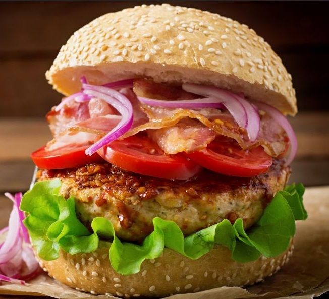
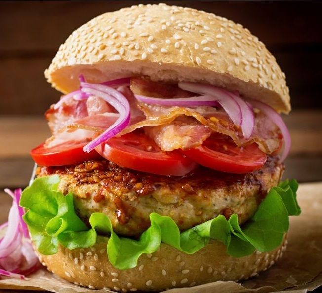
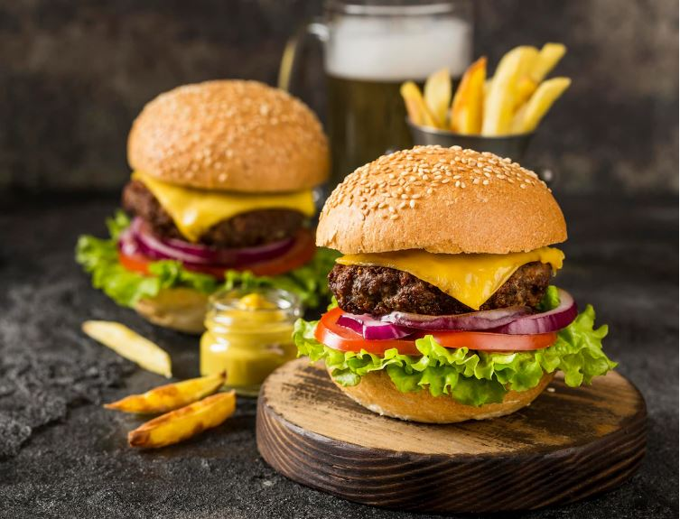
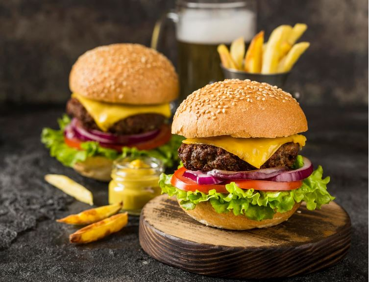

O que comer
Menu Originals Ibérico
Achas que já provaste tudo? Então maravilha o teu paladar com esta preciosidade.
-
.png)
-
Originals Ibérico Batatas Fritas Clássicas Total Peso (g) 413 159 1.072,00 Valor energético (Kcal) 1218 389.6 1.817,60 Proteínas (g) 77 5.4 82,40 Carboidratos (g) 49 102.1 204,10 Açúcar (g) 12 0.2 65,20 Gorduras (g) 78 15.7 93,70 Sal (mg) 0 1034 1.034,00 -
Originals Ibérico Batatas Fritas Clássicas Gluten Pode conter vestígios de gluten Mostarda Productos Lácteos Dióxido de Enxofre e Sulfitos > 10MG/KG Pode conter vestígios deproteína de soja Pode conter vestígios de sésamo Pode conter vestígios de peixe
O pão brioche está regado pelo molho secreto de Originals®, com duas carnes 100% Angus, separadas por duas fatias de Queijo Flamengo. A segunda carne 100% Angus é coroada com uma fatia do delicioso presunto ibérico, que tem tomate recém cortado por cima, canónigos e rúcula frescos.
Menu Originals Mediterrânica
Precisas de um momento para suspirar? Eu percebo-te. Pede o Originals Mediterrânico e percebe.
-

-
Originals Ibérico Batatas Fritas Clássicas Total Peso (g) 413 159 1.072,00 Valor energético (Kcal) 1218 389.6 1.817,60 Proteínas (g) 77 5.4 82,40 Carboidratos (g) 49 102.1 204,10 Açúcar (g) 12 0.2 65,20 Gorduras (g) 78 15.7 93,70 Sal (mg) 0 1034 1.034,00 -
Originals Ibérico Batatas Fritas Clássicas Gluten Pode conter vestígios de gluten Mostarda Productos Lácteos Dióxido de Enxofre e Sulfitos > 10MG/KG Pode conter vestígios deproteína de soja Pode conter vestígios de sésamo Pode conter vestígios de peixe
Assim que deres a primeira trinca e sentires o sabor do molho de queijo parmesão, as duas carnes 100% Angus grelhadas no ponto com lascas de Grana Padano entre elas, a acompanhar com tomate seco, rúcula e canónigos frescos, tudo regado por mais molho de queijo parmesão.
 
 


 
